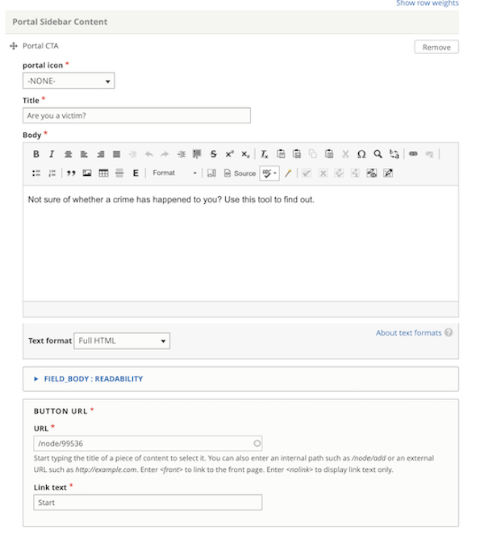
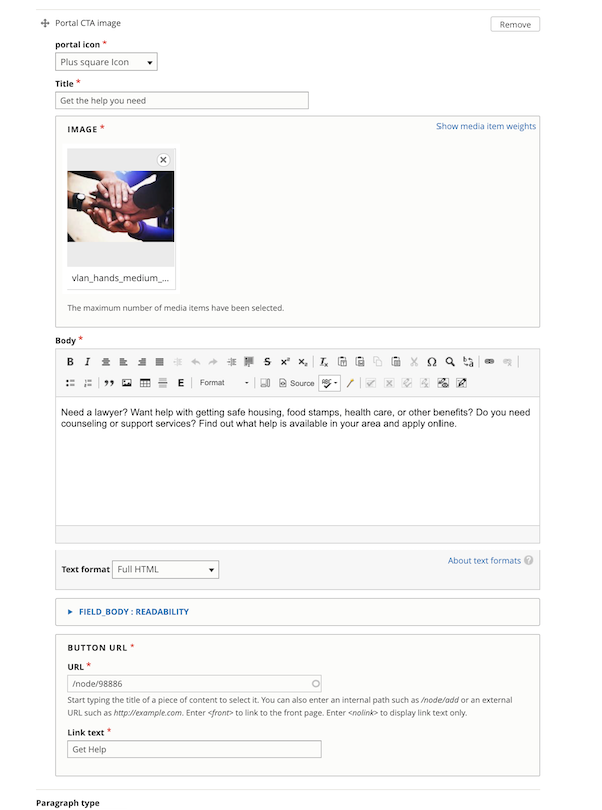
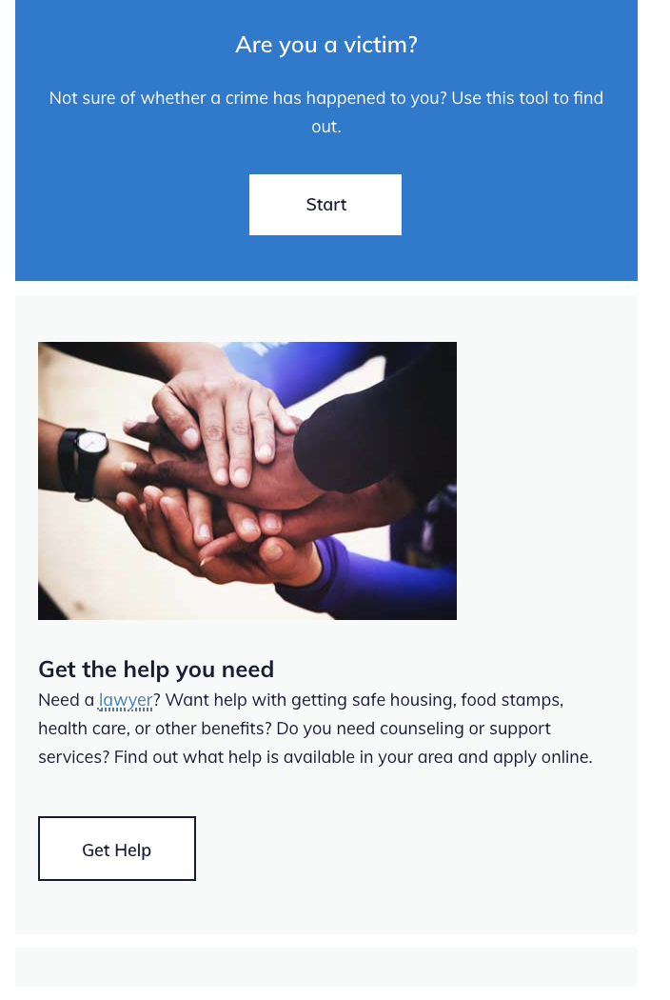

Portal layout sidebar¶
A portal layout sidebar is designed to provide call-to-action components outside of the main content. It can contain two types of components:
Portal CTA
Portal CTA image
Portal CTA¶
The portal CTA has fields for:
portal icon (to be deprecated; is not displayed to users)
Title
Body
Button label and url
All are required.
What users see¶
The Portal CTA is always rendered with the ILAO CTA blue background with white text and the solid white button.
Portal CTA image¶
The portal image CTA has fields for:
portal icon (to be deprecated; is not displayed to users)
image
Title
Body
Button label and url
All fields are required.
What users see¶
The Portal image cta is always rendered with a light gray background, text in the ILAO body color with a white button with a blue border.
Examples¶
The above example contains a Portal CTA item and a Portal CTA image item.
Placement¶
The portal layout sidebar appears on the right on desktop and above the main content section on mobile.